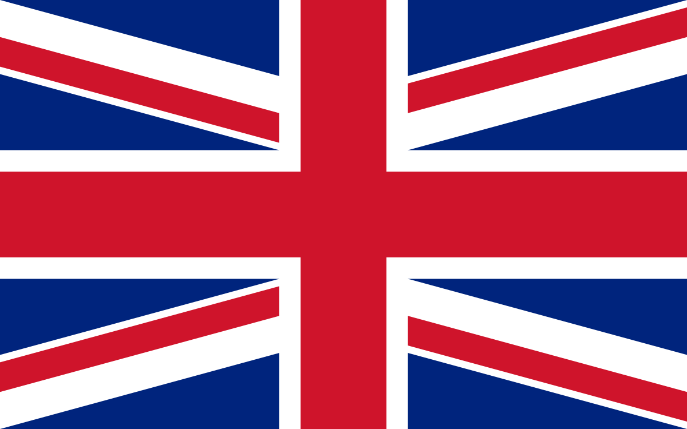
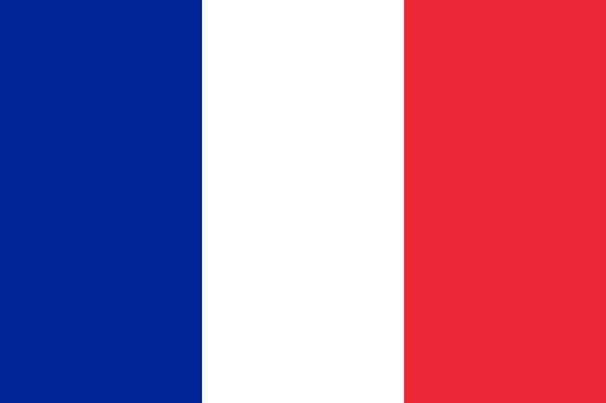
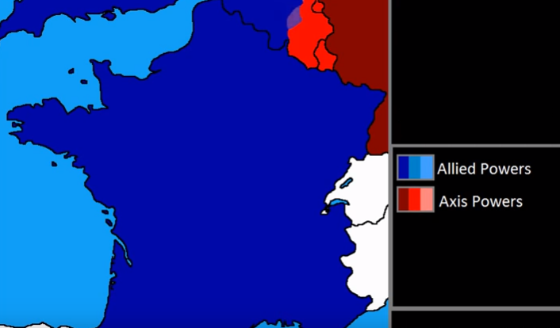
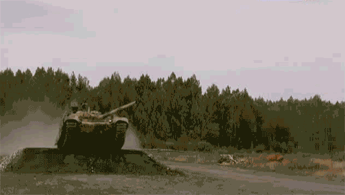
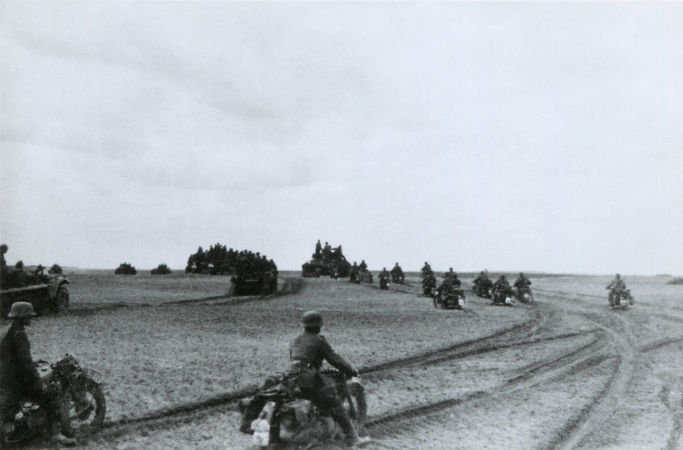
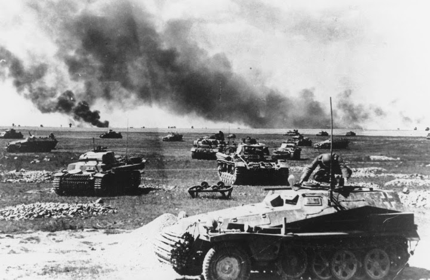
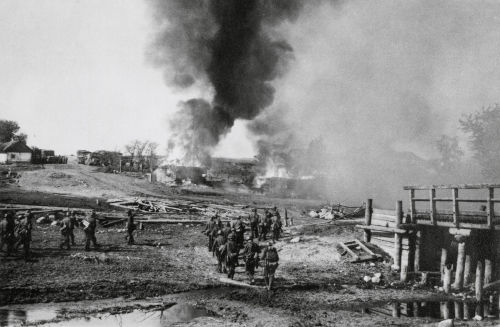
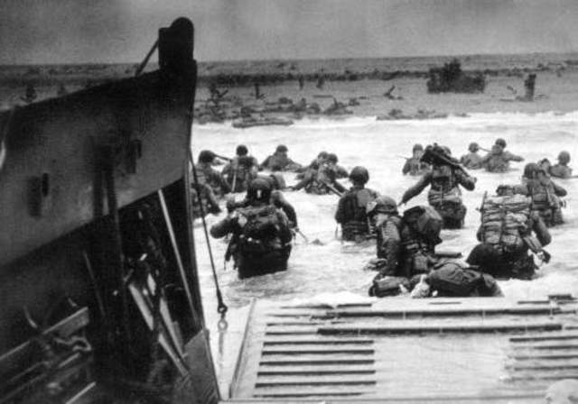

No verão de 1939, a 1 de Agosto, a Europa encontrava-se à beira da guerra,
quando uma estação em Gleiwitz, Alta Silésia, na Alemanha foi atacada por
um grupo de soldados da Polónia. No entanto, esta operação foi executada por
soldados alemães que possuíam uniformes polacos e que tinham como objetivo
encenar um ataque da Polónia à Alemanha, dando assim um motivo à Alemanha
para poder invadir a Polónia. Com este ato, começava oficialmente a Segunda
Guerra Mundial.
Em defesa da Polónia, dois países declararam guerra à Alemanha em 1939.
Consegues adivinhar quais foram?


Enquanto a Polónia tentava sobreviver à invasão dos alemães, um pacto foi assinado
entre a Alemanha e a União Soviética que pretendia dividir a Polónia
com a Alemanha. Assim, a invasão da Polónia foi realizada não
só pelos nazis, mas também pelos soviéticos. Os polacos resistiram
à invasão dos dois países apenas até 28 de Setembro, momento em que Varsóvia,
a capital do mesmo país, se rendeu aos alemães.
A Guerra de Inverno
A 30 de Novembro de 1939, a União Soviética invadiu
a Finlândia, dando origem a um confronto intitulado a Guerra de Inverno, que
durou até Março de 1940. À primeira vista, o que parecia ser uma vitória fácil
para os soviéticos acabou por se revelar algo mais complicado. Com táticas fora
do comum, os finlandeses resistiram aos soviéticos durante meses, o
que levou a que, apesar da vitória, Joseph Stalin investisse mais nos seus exércitos,
em modernizá-los, contratar profissionais mais competentes e armas mais
avançadas.
No dia 12 de Março de 1940, foi assinado um tratado de paz em que 10% do território
finlandês e 20% da sua capacidade industrial foram cedidos aos soviéticos.
Durante a Guerra de Inverno, o líder dos alemães tinha intenção de invadir dois países
neutros, a Noruega e a Dinamarca, planos que foram intitulados de Operação
Weserübung e a Campanha da Noruega. A invasão destes dois países era um ponto estratégico essencial, pois
iria permitir aos alemães usar poder marítimo contra os adversários (especialmente contra a Grã-Bretanha).
Como podemos ver no mapa, com ambos os países no seu domínio, os
alemães controlariam uma secção do Mar do Norte entre Londres e as respetivas capitais de cada
país, o que facilitava uma possível invasão aos Britânicos.
Noruega
Os alemães atacaram
em todas as frentes e apenas pararam quando toda a superfície territorial da
Noruega lhes foi cedida, dando assim fim à intitulada Campanha da Noruega.
Dinamarca
A Noruega foi mais resistente que a Dinamarca (que se rendeu rapidamente),
e ofereceram uma resistência forte chegando mesmo a afundar um navio de guerra nazi.
Guerra de Mentira
Quando a Polónia foi invadida, França e Inglaterra declararam
guerra à Alemanha, mas, até este momento, nenhuma operação militar tinha sido
executada contra os alemães. A intenção dos dois países era evitar um conflito
da dimensão do da primeira guerra mundial. Deste modo, estavam a agir
de forma cautelosa, daí o termo "Guerra de Mentira".
No dia 10 de Março, a França foi invadida pelos nazis e ocorreu assim a Batalha de França.
Os alemães vieram da Floresta das Ardenas e flanquearam a Linha Maginot (representada a vermelho no mapa), que era
constituída por um conjunto de trincheiras criadas pelos franceses e tinha
como objetivos: evitar um ataque surpresa, permitir que o exército se organizasse
e poupar recursos.
No entanto, a linha não ajudou os franceses, pois as forças alemãs
rapidamente a romperam e facilmente atacaram a França, com a ajuda dos italianos.
Após a invasão, a França ficou dividida em duas metades: a metade Livre (Sul)
e a metade sob o controlo Nazi (Norte).

Invasão à Bélgica
Outro dos países invadidos pelos alemães no dia 10 de Março de 1940 foi a Bélgica, sendo que
este, ao fim de 18 dias, se rendeu às forças nazis. A invasão foi intitulada Campanha dos 18 dias.
Desta invasão destacam-se dois acontecimentos:

Batalha de Hannut
A Batalha de Hannut foi a primeira e uma das maiores batalhas de tanques que alguma vez aconteceu.
Nunca antes tinha existido um confronto de tanques de tamanha proporção como o que aconteceu
nesse dia na Bélgica!
Batalha da Fortaleza Eben-Emael
Esta batalha ficou marcada pela maneira como os alemães tomaram de assalto a referida fortaleza:
500 paraquedistas em planadores foram lançados em direção à fortaleza,
rapidamente a atacaram e capturaram os militares belgas.
Foi a primeira vez que esta tática foi usada.
Invasões a Países Baixos e Luxemburgo
Os últimos dois países dos quatro a serem invadidos no dia 10 de Março, foram
os Países Baixos e o Luxemburgo.
A invasão dos Países Baixos, tal como a da Bélgica, usou a técnica inovadora
de lançar paraquedistas alemães nos "pontos chave" do país, incluindo os principais
aeroportos e as cidades de Roterdão e Haia. Em aproximadamente 7 dias,
o país inteiro foi tomado, graças também aos bombardeamentos devastadores alemães.
O Luxemburgo, num
curto espaço de tempo, foi completamente ocupado pelos alemães. A invasão
deste país foi justificada pelo facto de que Hitler necessitava de colocar
os seus exércitos num local perto da vizinha França. Por isso mesmo, foi permitido
ao Luxemburgo manter o seu governo, mas continuaram a ser assolados
com a presença militar alemã.
Blitz
No dia 7 de Setembro de 1940, começou
a ocorrer um ataque como nunca antes visto na Inglaterra, intitulado
Blitz (relâmpago), que consistiu numa série de bombardeamentos
realizados pela Luftwaffe em pontos estratégicos do Reino Unido. Este ataque
teve a duração de 57 noites e atingiu um grande número de cidades inglesas
(identificadas no mapa).
Apesar da força destruidora que estes ataques representaram,
fracassaram nos seus objetivos que eram: danificar o país, enfraquecer as defesas
e desmoralizar o povo, que acabou por não acontecer. Consequentemente, os futuros planos
de invasão ao Reino Unido foram postos de parte por Hitler.
Operação Barbarossa
A 22 de junho de 1941, foi posta em prática a operação Barbarossa, que consistiu
na invasão da União Soviética pela Alemanha.

Operação Barbarossa
Desde a invasão da Finlândia, Hitler tinha ideia de que o Exército
Vermelho não iria oferecer muita resistência pela sua desorganização
e incompetência. Por outro lado, Joseph Stalin
tinha aperfeiçoado as suas forças e devido à dimensão destas, ao estado industrial
e militar do seu país, não pensava que Hitler o invadisse.

Operação Barbarossa
Em fevereiro de 1941, tropas alemãs começavam a ser reunidas nas fronteiras
soviéticas. Assim sendo, no dia 22 de junho de 1941, foram atacadas as frentes que o
exército vermelho tinha preparado para a invasão e foram feitos bombardeamentos aéreos
em cidades e países que pertenciam à União Soviética.

Operação Barbarossa
Enquanto o confronto ocorria, os alemães iam percebendo que tinham
subestimado os soviéticos e iam sofrendo com os contra ataques dos mesmos e condições adversas. Apesar
da conquista de certos territórios, os alemães fracassaram na tomada de Moscovo e no seu objetivo
no geral.
Esta operação foi a maior alguma vez vista, nunca tantos soldados, tanques,
armas e outros meios foram usados numa única ofensiva. Até ao momento, esta
revelou-se também o confronto mais violento da guerra, ou seja, nunca o números
de mortos e feridos tinha sido tão elevado.
Japão e as Alianças
No final de 1941, o Japão atacou territórios britânicos
e americanos, sendo que o mais conhecido foi o ataque a Pearl Harbor,
base militar localizada no Havai, que matou cerca de 2403 pessoas e feriu outras
1178. Assim sendo, os Estados Unidos declararam guerra aos japoneses
e consequentemente, as Potências do Eixo declararam guerra aos Estados Unidos.
Na tabela seguinte, apresenta a divisão entre as Potências do Eixo, Aliados e Países Neutros.
Aliados
Potências do Eixo
Neutros
Reino Unido
Alemanha
Portugal
França
Itália
Espanha
Estados Unidos
Japão
Suiça
China
Bulgária
Suécia
Dia D
6 de Junho de 1944, foi um dos dias mais marcantes nesta grande guerra.
Enquanto os alemães confrontavam a União Soviética, começou a ser elaborado um plano de
proporções inimagináveis que foi posto em prática no dia 6 de Junho.
Aproximadamente à meia-noite desse dia, a costa francesa começou a ser fortemente bombardeada.
Após os bem sucedidos desembarques, as unidades militares alemãs presentes
em França foram derrotadas com ajuda das tropas provenientes da metade livre
francesa e, assim, após umas breves semanas, a França foi libertada do domínio
alemão a 25 de agosto de 1944. (Local de desembarque das tropas e o respetivo desembarque)

Este foi um dos dias mais importantes de toda a guerra, pois após o mesmo,
as forças do Eixo não conseguiram ripostar a um ataque de tamanha dimensão
e, apesar do número de vítimas e de feridos, foi a partir deste dia que
começou a libertação da Europa do domínio nazi.
No dia 25 de abril, as forças dos
aliados penetraram em Berlim, 5 dias depois, a 30 de abril, o prédio do
parlamento alemão (conhecido como Reichstag) foi capturado.
A Europa estava finalmente livre do domínio alemão.
As Bombas Atómicas no Japão
A 8 de maio de 1945 foi assinada pela Alemanha uma rendição e a 26 de julho
de 1946 os Estados Unidos da América fizeram também um pedido ao Japão sob
ameaça de destruição total. Os japoneses não seguiram o exemplo dos alemães,
logo, um dos mais mortíferos ataques em toda a guerra ocorreu.
Bomba Little Boy
Bomba Fat Man
A primeira foi lançada sobre Hiroshima e a segunda sobre Nagasaki, sendo que este
acontecimento ficou registado como a primeira e única vez
em que foram usadas armas nucleares. Após isto, o Japão assinou uma rendição e originou assim ...